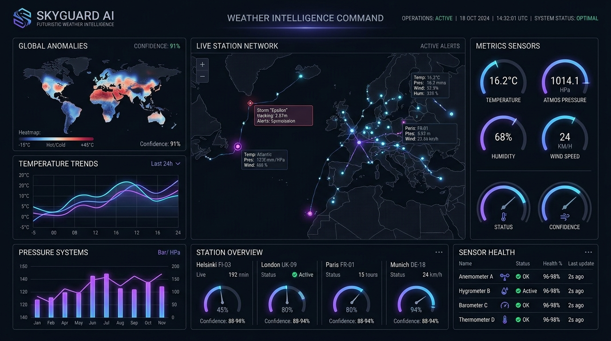

SkyGuard AI
An AI-powered Automatic Weather Station intelligence system designed to detect abnormal sensor readings and distinguish potential sensor/data anomalies from unusual environmental conditions.
THE PROBLEM
AWS sensors continuously collect weather data, but drift, frozen states, and corrupted transmissions compromise early weather alerts.
THE SOLUTION
Multi-parameter correlation (Temperature, Pressure, Relative Humidity) with automated anomaly scoring and diagnosis.
